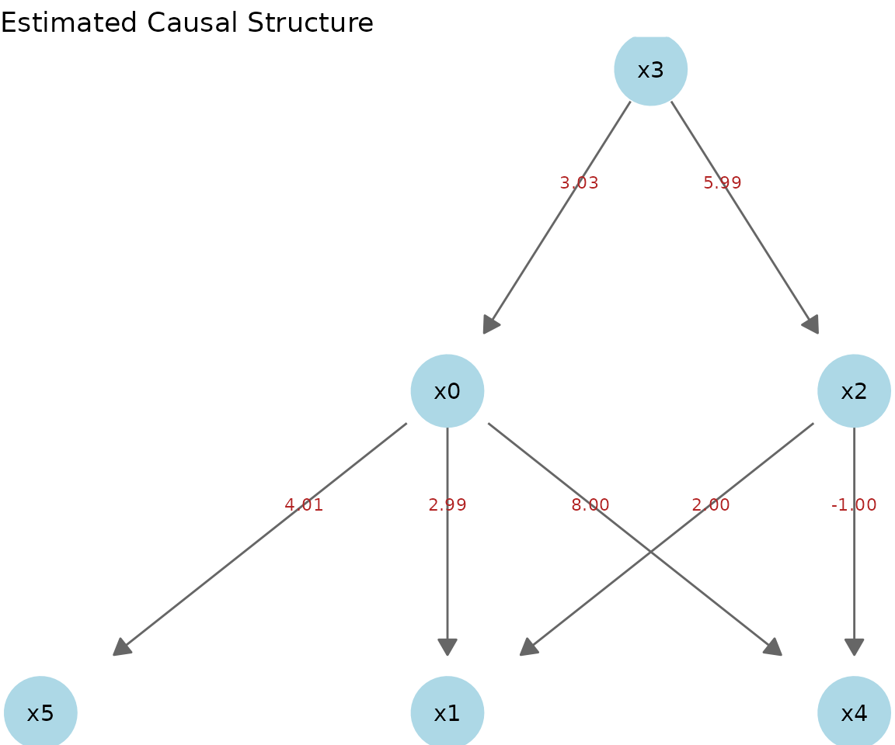

このビニェットでは、lingamr
を使った因果探索の一連のワークフローを、
サンプルデータを用いて順に解説します。
サンプルデータ
generate_lingam_sample_6() は 6 変数の LiNGAM
モデルに従う人工データと、 その真の隣接行列を返します。
データはdataに、隣接行列はtrue_adjacencyに格納されています。
x1k <- generate_lingam_sample_6(n = 1000)
x1k$data |>
head()
#> x0 x1 x2 x3 x4 x5
#> 1 2.814924 18.017120 4.543655 0.6333728 18.160090 12.236660
#> 2 1.889685 10.956005 2.188091 0.3175366 13.172754 7.932657
#> 3 1.008905 6.990652 1.953131 0.2409218 6.702107 4.797122
#> 4 1.965690 12.296763 2.847148 0.3784141 13.224002 8.685252
#> 5 1.698178 9.698147 2.145058 0.3521443 11.673495 7.366258
#> 6 1.412372 8.640107 1.929980 0.2977585 10.024075 6.340899
x1k$true_adjacency
#> x0 x1 x2 x3 x4 x5
#> x0 0 0 0 3 0 0
#> x1 3 0 2 0 0 0
#> x2 0 0 0 6 0 0
#> x3 0 0 0 0 0 0
#> x4 8 0 -1 0 0 0
#> x5 4 0 0 0 0 0plot_adjacency関数を使うと、隣接行列に基づいた因果グラフを描画できます。
x1k$true_adjacency |>
plot_adjacency(
labels = colnames(x1k$data),
title = "True causal structure",
rankdir = "TB",
shape = "circle"
)因果探索 (Causal Discovery)
lingam_direct() で Direct LiNGAM
を実行します。独立性の評価はデフォルトでは 相互情報量 (mutual
information) を用い、パス係数の算出には適応的 LASSO 回帰が
使われます。
独立性の評価にHSICを使うには 引数measure に “kernel” を指定します。 処理に大変時間がかかることに注意が必要です。
model <- x1k$data |>
lingam_direct()因果の順序 (Causal Order)
推定された因果の順序は causal_order にインデックス番号として格納されています。
# index number
model$causal_order
#> [1] 4 3 1 5 6 2
# variable name
colnames(x1k$data)[model$causal_order]
#> [1] "x3" "x2" "x0" "x4" "x5" "x1"推定された隣接行列 (Estimated Adjacency Matrix)
推定された効果の量を確認します。デフォルトでは適応的LASSO回帰の回帰係数が用いられます。
model$adjacency_matrix |>
round(3)
#> x0 x1 x2 x3 x4 x5
#> x0 0.000 0 0.000 3.033 0 0
#> x1 2.988 0 2.002 0.000 0 0
#> x2 0.000 0 0.000 5.993 0 0
#> x3 0.000 0 0.000 0.000 0 0
#> x4 8.017 0 -1.009 0.000 0 0
#> x5 4.015 0 0.000 0.000 0 0因果グラフの描画
推定された隣接行列に基づいて、因果グラフを描きます。
model$adjacency_matrix |>
plot_adjacency(
labels = colnames(model$adjacency_matrix),
title = "Estimated Causal Structure (Direct LiNGAM)",
rankdir = "TB",
shape = "ellipse",
fillcolor = "lightgreen"
)推定構造と真の構造の比較
サンプルデータのように真の構造が分かっている場合は、plot_adjacency()
の true_B
引数に真の隣接行列を渡すことで、推定されたエッジを真の構造と照合して
色分けできます。推定精度を一目で確認できるため、手法の検証や教育用途に便利です。
- 緑（実線）: 正しく検出されたエッジ（推定あり・真あり）
- 赤（実線）: 過検出されたエッジ（推定あり・真なし）
- オレンジ（破線）: 見逃したエッジ（推定なし・真あり、真の係数を表示）
model$adjacency_matrix |>
plot_adjacency(
labels = colnames(model$adjacency_matrix),
true_B = x1k$true_adjacency,
title = "Estimated vs. True Structure",
rankdir = "TB",
shape = "ellipse"
)ggplot2 による静的な描画
plot_adjacency() は DiagrammeR による対話的な HTML
図を返しますが、 autoplot() を使うと同じ因果構造を ggplot2
ベースの静的な図として描けます。 RMarkdown / Quarto での画像・PDF
出力で安定し、ggplot2 の関数でテーマや
タイトルを後から重ねられます。ノード配置は igraph
の階層レイアウトで計算され、
因果の流れがおおむね上から下へ並びます。
autoplot() は ggplot2
のジェネリックなので、ggplot2::autoplot() として
呼び出すか、事前に library(ggplot2)
で読み込みます（描画には ggplot2 と igraph
が必要です）。
ggplot2::autoplot(model)
総合因果効果 (Total Causal Effect)
推定されたすべての総合効果を算出します。
x1k$data |>
estimate_all_total_effects(model) |>
round(3)
#> x0 x1 x2 x3 x4 x5
#> x0 0.000 0 0.000 3.033 0 0
#> x1 2.897 0 1.910 21.059 0 0
#> x2 0.000 0 0.000 5.993 0 0
#> x3 0.000 0 0.000 0.000 0 0
#> x4 8.001 0 -1.308 18.276 0 0
#> x5 4.015 0 0.000 12.179 0 0事前知識を用いた推論 (Prior Knowledge)
事前知識を用いた実行例です。
インデックスでの指定
- 変数の数は 6 個
- x3 is an exogenous variable.
- x1, x4, and x5 are sink variables.
- x0 to x2 are no path.
pk1 <- make_prior_knowledge(
n_variables = 6,
exogenous_variables = 4,
sink_variables = c(2, 5, 6),
no_paths = list(c(3, 1), c(1, 3))
)
pk1
#> [,1] [,2] [,3] [,4] [,5] [,6]
#> [1,] -1 0 0 -1 0 0
#> [2,] -1 -1 -1 -1 0 0
#> [3,] 0 0 -1 -1 0 0
#> [4,] 0 0 0 -1 0 0
#> [5,] -1 0 -1 -1 -1 0
#> [6,] -1 0 -1 -1 0 -1Direct LiNGAM を実行する際に、引数 prior_knowledge
に事前知識を指定します。
model_pk1 <- x1k$data |>
lingam_direct(prior_knowledge = pk1, lambda = "BIC")
cat("Causal Order: ", colnames(x1k$data)[model_pk1$causal_order], "\n")
#> Causal Order: x3 x2 x0 x4 x5 x1結果の隣接行列に基づいて因果グラフを描きます。
model_pk1$adjacency_matrix |>
round(3)
#> x0 x1 x2 x3 x4 x5
#> x0 0.000 0 0.000 3.033 0 0
#> x1 2.988 0 2.002 0.000 0 0
#> x2 0.000 0 0.000 5.993 0 0
#> x3 0.000 0 0.000 0.000 0 0
#> x4 8.017 0 -1.009 0.000 0 0
#> x5 4.015 0 0.000 0.000 0 0
model_pk1$adjacency_matrix |>
plot_adjacency(
labels = colnames(model_pk1$adjacency_matrix),
title = "Estimated (with Prior Knowledge)",
rankdir = "TB",
shape = "circle",
fillcolor = "lightgreen"
)誤差変数間の独立性 (Independence between error variables)
LiNGAM では残差が独立であることを仮定しています。
get_error_independence_p_values() は残差間の独立性の検定の
p 値を返します。
result <- x1k$data |>
lingam_direct()
p_vals <- x1k$data |>
get_error_independence_p_values(result)
round(p_vals, 3)
#> x0 x1 x2 x3 x4 x5
#> x0 NA 0.988 0.214 0.976 0.484 0.954
#> x1 0.988 NA 0.986 0.991 0.323 0.882
#> x2 0.214 0.986 NA 0.919 0.100 0.124
#> x3 0.976 0.991 0.919 NA 0.806 0.974
#> x4 0.484 0.323 0.100 0.806 NA 0.643
#> x5 0.954 0.882 0.124 0.974 0.643 NA非ガウス性という前提
LiNGAM の理論的な核心は、誤差項が非ガウス分布に従うという仮定です。誤差が ガウス分布の場合、因果の向きは原理的に識別できなくなり（同じ分布を説明する 逆向きのモデルが存在してしまう）、推定結果は信頼できません。
generate_lingam_sample_6() の noise_dist
引数で誤差分布を切り替え、この違いを
実際に確かめてみます。真の構造は次のとおりです（根は x3）。
set.seed(0)
truth <- generate_lingam_sample_6(noise_dist = "uniform")
truth$true_adjacency |>
round(1)
#> x0 x1 x2 x3 x4 x5
#> x0 0 0 0 3 0 0
#> x1 3 0 2 0 0 0
#> x2 0 0 0 6 0 0
#> x3 0 0 0 0 0 0
#> x4 8 0 -1 0 0 0
#> x5 4 0 0 0 0 0非ガウス誤差（一様分布）— うまくいく場合
fit_uniform <- lingam_direct(truth$data)
# 推定された因果順序（真の根 x3 が先頭に来る）
colnames(truth$data)[fit_uniform$causal_order]
#> [1] "x3" "x2" "x0" "x4" "x5" "x1"
# 推定隣接行列は真の構造をほぼ完全に復元する
fit_uniform$adjacency_matrix |>
round(1)
#> x0 x1 x2 x3 x4 x5
#> x0 0 0 0 3 0 0
#> x1 3 0 2 0 0 0
#> x2 0 0 0 6 0 0
#> x3 0 0 0 0 0 0
#> x4 8 0 -1 0 0 0
#> x5 4 0 0 0 0 0ガウス誤差 — 失敗する場合
同じ因果構造でも、誤差をガウス分布にすると結果が崩れます。
gauss <- generate_lingam_sample_6(noise_dist = "gaussian")
fit_gauss <- lingam_direct(gauss$data)
# 因果順序が真の構造と一致しない（根 x3 が先頭に来ない）
colnames(gauss$data)[fit_gauss$causal_order]
#> [1] "x1" "x2" "x5" "x3" "x4" "x0"
fit_gauss$adjacency_matrix |>
round(1)
#> x0 x1 x2 x3 x4 x5
#> x0 0 0.1 0.0 0 0.1 0.0
#> x1 0 0.0 0.0 0 0.0 0.0
#> x2 0 0.3 0.0 0 0.0 0.0
#> x3 0 0.0 0.2 0 0.0 0.0
#> x4 0 0.9 -2.7 0 0.0 1.3
#> x5 0 1.2 -2.2 0 0.0 0.0非ガウス誤差では真の隣接行列がそのまま復元されるのに対し、ガウス誤差では因果順序も 係数も真の構造から大きく外れます。これが「LiNGAM はデータの非ガウス性を利用して 因果の向きを決める」と言われる所以です。実データに適用する際は、次節のように 残差の正規性を検定して、この前提が成り立っているかを確認することが重要です。
残差の正規性の検定
残差の正規性の検定を行います。LiNGAM は非ガウス性を仮定するため、正規性が 棄却される（p 値が小さい）ほうがモデルの前提に合致します。
# Shapiro-Wilk (default)
x1k$data |>
test_residual_normality(result)
#> === Residual Normality Test ===
#> Method: shapiro
#> Sample size: 1000
#> Significance: 0.050
#> Non-Gaussian: 6 / 6 variables
#>
#> variable statistic p_value is_non_gauss skewness kurtosis
#> x0 0.9516 < 2.2e-16 TRUE 0.061 -1.215
#> x1 0.9521 < 2.2e-16 TRUE 0.026 -1.213
#> x2 0.9557 < 2.2e-16 TRUE 0.083 -1.170
#> x3 0.9578 2.25e-16 TRUE 0.025 -1.163
#> x4 0.9546 < 2.2e-16 TRUE -0.003 -1.205
#> x5 0.9536 < 2.2e-16 TRUE -0.052 -1.206
#>
#> Interpretation:
#> is_non_gauss = TRUE -> rejects normality (supports LiNGAM assumption)
#> is_non_gauss = FALSE -> cannot reject normality (LiNGAM may not fit)
#>
#> All residuals are non-Gaussian. LiNGAM assumption is supported.QQ プロットでも残差の正規性を確認します。
x1k$data |>
plot_residual_qq(result)
適合度の一括要約 (Model Summary)
summary_lingam()
は、残差の独立性検定と正規性検定をまとめて実行し、LiNGAM が
依拠する2つの前提（残差が互いに独立であること・残差が非ガウスであること）の
成立度合いを一覧で確認できます。個別に
get_error_independence_p_values() や
test_residual_normality()
を呼ぶ代わりに、診断を1か所で見渡せます。
x1k$data |>
summary_lingam(result)
#> === Direct LiNGAM Model Summary ===
#> Variables: 6
#> Observations: 1000
#> Edges: 7
#> Causal order: x3 -> x2 -> x0 -> x4 -> x5 -> x1
#>
#> --- Assumption 1: Independence of residuals ---
#> Method: spearman
#> Dependent pairs: 0 / 15 (p < 0.050)
#> Min p-value: 0.1002
#> => Residuals appear mutually independent (assumption supported).
#>
#> --- Assumption 2: Non-Gaussianity of residuals ---
#> Method: shapiro
#> Non-Gaussian: 6 / 6 (p <= 0.050)
#> => All residuals are non-Gaussian (assumption supported).ブートストラップ (Bootstrap Direct LiNGAM)
ブートストラップ法でモデルの確からしさを確認します。
bs_model <- x1k$data |>
lingam_direct_bootstrap(n_sampling = 100L, seed = 42)
#> Bootstrap: 100 iterations, method=adaptive_lasso (sequential)
#> iteration 1 / 100
#> iteration 10 / 100
#> iteration 20 / 100
#> iteration 30 / 100
#> iteration 40 / 100
#> iteration 50 / 100
#> iteration 60 / 100
#> iteration 70 / 100
#> iteration 80 / 100
#> iteration 90 / 100
#> iteration 100 / 100
#> Completed in 3.2 seconds.
bs_model
#> BootstrapResult: 100 samplings, 6 features反復回数や変数が多い場合は、parallel = TRUE
を指定するとマルチコアで高速に 実行できます。使用コア数は
n_cores で指定します（未指定時は安全のため最大 2
コア）。
bs_model <- x1k$data |>
lingam_direct_bootstrap(
n_sampling = 100L,
seed = 42,
parallel = TRUE,
n_cores = 4L
)なお並列実行時は L’Ecuyer の並列乱数ストリームを使用するため、同じ
seed・同じ n_cores
であれば結果は再現しますが、逐次実行（parallel = FALSE）の結果とは
数値的に一致しません。
ブートストラップの結果確認
ブートストラップ法の結果から各パスの出現割合や係数の平均値を算出します。
bs_model |>
get_causal_direction_counts(labels = names(x1k$data))
#> from to count proportion mean_effect median_effect sd_effect ci_lower
#> 1 1 6 100 1.00 4.01535064 4.01518466 0.01127031 3.99552486
#> 2 1 2 99 0.99 2.98223709 2.97929357 0.02843886 2.93018267
#> 3 1 5 99 0.99 8.01741193 8.01499334 0.02793983 7.96982894
#> 4 3 2 99 0.99 2.00484060 2.00654938 0.01477014 1.97675011
#> 5 3 5 99 0.99 -1.00940817 -1.00898195 0.01434909 -1.03920338
#> 6 4 1 99 0.99 3.03520802 3.03586526 0.03002439 2.97854657
#> 7 4 3 99 0.99 5.99647035 5.99745219 0.03184846 5.94046661
#> 8 2 1 1 0.01 0.05299398 0.05299398 0.00000000 0.05299398
#> 9 2 3 1 0.01 0.40422428 0.40422428 0.00000000 0.40422428
#> 10 2 5 1 0.01 0.90679690 0.90679690 0.00000000 0.90679690
#> 11 3 4 1 0.01 0.16165370 0.16165370 0.00000000 0.16165370
#> 12 5 1 1 0.01 0.10459193 0.10459193 0.00000000 0.10459193
#> 13 5 3 1 0.01 -0.13879324 -0.13879324 0.00000000 -0.13879324
#> ci_upper from_name to_name
#> 1 4.03705179 x0 x5
#> 2 3.03872609 x0 x1
#> 3 8.07779274 x0 x4
#> 4 2.03177449 x2 x1
#> 5 -0.98291713 x2 x4
#> 6 3.09306961 x3 x0
#> 7 6.06134091 x3 x2
#> 8 0.05299398 x1 x0
#> 9 0.40422428 x1 x2
#> 10 0.90679690 x1 x4
#> 11 0.16165370 x2 x3
#> 12 0.10459193 x4 x0
#> 13 -0.13879324 x4 x2平均因果効果の隣接行列
ブートストラップの結果から隣接行列を作成します。
bs_adjacency_matrix <- bs_model |>
get_adjacency_matrix_summary(stat = "median")
bs_adjacency_matrix |>
round(3)
#> [,1] [,2] [,3] [,4] [,5] [,6]
#> [1,] 0.000 0.053 0.000 3.036 0.105 0
#> [2,] 2.979 0.000 2.007 0.000 0.000 0
#> [3,] 0.000 0.404 0.000 5.997 -0.139 0
#> [4,] 0.000 0.000 0.162 0.000 0.000 0
#> [5,] 8.015 0.907 -1.009 0.000 0.000 0
#> [6,] 4.015 0.000 0.000 0.000 0.000 0推定された隣接行列の可視化します。
bs_adjacency_matrix |>
plot_adjacency(
labels = colnames(x1k$data),
title = "Estimated (with Bootstrap)",
rankdir = "TB",
shape = "circle",
fillcolor = "lightgreen"
)各パスの出現割合の行列
各パスの出現割合の行列を算出します。
bs_model |>
get_probabilities()
#> [,1] [,2] [,3] [,4] [,5] [,6]
#> [1,] 0.00 0.01 0.00 0.99 0.01 0
#> [2,] 0.99 0.00 0.99 0.00 0.00 0
#> [3,] 0.00 0.01 0.00 0.99 0.01 0
#> [4,] 0.00 0.00 0.01 0.00 0.00 0
#> [5,] 0.99 0.01 0.99 0.00 0.00 0
#> [6,] 1.00 0.00 0.00 0.00 0.00 0平均総合効果
各パスの平均総合効果を算出します。
bs_model |>
get_total_causal_effects()
#> from to effect probability
#> 1 1 6 4.01522820 1.00
#> 2 1 2 2.89964231 0.99
#> 3 1 5 8.00358754 0.99
#> 4 3 2 1.93096970 0.99
#> 5 3 5 -1.24882407 0.99
#> 6 4 1 3.03586526 0.99
#> 7 4 2 21.07027271 0.99
#> 8 4 3 5.99805118 0.99
#> 9 4 5 18.28272145 0.99
#> 10 4 6 12.18719857 0.99
#> 11 6 2 0.20011220 0.11
#> 12 3 6 -0.32306351 0.07
#> 13 2 1 0.14794503 0.01
#> 14 2 3 0.27850920 0.01
#> 15 2 4 0.04611007 0.01
#> 16 2 5 0.90679690 0.01
#> 17 2 6 0.59359217 0.01
#> 18 3 4 0.16191585 0.01
#> 19 5 1 0.10506715 0.01
#> 20 5 3 -0.13869103 0.01
#> 21 5 6 0.41846402 0.01ブートストラップの結果を因果グラフにします。デフォルトでは 50% 以上出現している パスのみを表示します。
bs_model |>
plot_bootstrap_probabilities()因果順序の安定性
get_causal_order_stability()
は、各ブートストラップ標本で推定された因果順序を
集計し、順序がどれだけ安定しているかを数値化します。各変数の順位分布、変数ペアの
先行確率（P[i, j] = 変数 i が j
より上流に来た割合）、および全体の安定性スコア （0 = ランダム、1 =
全標本で一致）を返します。
bs_model |>
get_causal_order_stability(labels = names(x1k$data))
#> === Causal Order Stability ===
#> Bootstrap samples: 100
#> Overall stability score: 0.736 (0 = random, 1 = fully stable)
#>
#> Rank summary (sorted by mean rank; 1 = most upstream):
#> variable mean_rank sd_rank median_rank mode_rank
#> x3 1.05 0.50 1 1
#> x0 2.62 0.51 3 3
#> x2 2.75 0.95 2 2
#> x5 4.41 1.23 4 3
#> x4 4.92 0.77 5 5
#> x1 5.25 0.88 5 6
#>
#> Precedence probability P[i, j] = P(variable i precedes j):
#> x0 x1 x2 x3 x4 x5
#> x0 0.00 0.99 0.39 0.01 0.99 1.00
#> x1 0.01 0.00 0.01 0.01 0.38 0.34
#> x2 0.61 0.99 0.00 0.01 0.99 0.65
#> x3 0.99 0.99 0.99 0.00 0.99 0.99
#> x4 0.01 0.62 0.01 0.01 0.00 0.43
#> x5 0.00 0.66 0.35 0.01 0.57 0.00broom との連携 (tidy / glance)
推定結果は broom 互換の tidy() /
glance() で data.frame に変換でき、 ggplot2 や
dplyr との連携が容易になります。tidy()
はエッジ一覧（from, to,
estimate）を、glance()
はモデル全体の1行サマリを返します。tidy() は
ブートストラップ結果にも使え、その場合は各方向の出現割合などを返します。
# 推定された隣接行列をエッジ一覧に変換
tidy(model)
#> from to estimate
#> 1 x0 x1 2.987704
#> 2 x0 x4 8.016514
#> 3 x0 x5 4.015008
#> 4 x2 x1 2.001708
#> 5 x2 x4 -1.009459
#> 6 x3 x0 3.032965
#> 7 x3 x2 5.992677
# モデル全体の1行サマリ
glance(model)
#> n_variables n_edges causal_order
#> 1 6 7 x3 -> x2 -> x0 -> x4 -> x5 -> x1
# ブートストラップ結果の方向別サマリ（labels で変数名を付与）
tidy(bs_model, labels = names(x1k$data))
#> from to count proportion mean_effect median_effect sd_effect ci_lower
#> 1 1 6 100 1.00 4.01535064 4.01518466 0.01127031 3.99552486
#> 2 1 2 99 0.99 2.98223709 2.97929357 0.02843886 2.93018267
#> 3 1 5 99 0.99 8.01741193 8.01499334 0.02793983 7.96982894
#> 4 3 2 99 0.99 2.00484060 2.00654938 0.01477014 1.97675011
#> 5 3 5 99 0.99 -1.00940817 -1.00898195 0.01434909 -1.03920338
#> 6 4 1 99 0.99 3.03520802 3.03586526 0.03002439 2.97854657
#> 7 4 3 99 0.99 5.99647035 5.99745219 0.03184846 5.94046661
#> 8 2 1 1 0.01 0.05299398 0.05299398 0.00000000 0.05299398
#> 9 2 3 1 0.01 0.40422428 0.40422428 0.00000000 0.40422428
#> 10 2 5 1 0.01 0.90679690 0.90679690 0.00000000 0.90679690
#> 11 3 4 1 0.01 0.16165370 0.16165370 0.00000000 0.16165370
#> 12 5 1 1 0.01 0.10459193 0.10459193 0.00000000 0.10459193
#> 13 5 3 1 0.01 -0.13879324 -0.13879324 0.00000000 -0.13879324
#> ci_upper from_name to_name
#> 1 4.03705179 x0 x5
#> 2 3.03872609 x0 x1
#> 3 8.07779274 x0 x4
#> 4 2.03177449 x2 x1
#> 5 -0.98291713 x2 x4
#> 6 3.09306961 x3 x0
#> 7 6.06134091 x3 x2
#> 8 0.05299398 x1 x0
#> 9 0.40422428 x1 x2
#> 10 0.90679690 x1 x4
#> 11 0.16165370 x2 x3
#> 12 0.10459193 x4 x0
#> 13 -0.13879324 x4 x2より大きなデータセット（10 変数）
10変数、1万行の大きめのデータセットの例です。
x10k <- generate_lingam_sample_10(n = 10000)
x10k$true_adjacency |>
plot_adjacency(
labels = colnames(x10k$data),
title = "True causal structure",
rankdir = "TB",
shape = "circle"
)ICA-LiNGAM と Direct LiNGAM の比較
pcalg::lingam() は FastICA
で混合行列を推定し、因果順序と係数を求める オリジナルの LiNGAM
アルゴリズムです（Shimizu et al. 2006）。 lingam_direct()
とは独立したアプローチを取りながら同じ問題を解きます。
両アルゴリズムの実行
同じ 6 変数データセット（）を両手法で分析します。
d_cmp <- generate_lingam_sample_6(n = 1000, seed = 42)
t_cmp_direct <- system.time(res_cmp_direct <- lingam_direct(d_cmp$data))
t_cmp_ica <- system.time(res_cmp_ica <- pcalg::lingam(as.matrix(d_cmp$data)))
cat(sprintf("Direct LiNGAM : %.2f 秒\nICA-LiNGAM : %.2f 秒\n",
t_cmp_direct["elapsed"], t_cmp_ica["elapsed"]))
#> Direct LiNGAM : 0.01 秒
#> ICA-LiNGAM : 0.02 秒推定係数の比較
$Bpruned は lingamr
の隣接行列と同じ規約です（B[i, j] =
の係数）。
B_ica <- res_cmp_ica$Bpruned
rownames(B_ica) <- colnames(B_ica) <- names(d_cmp$data)
idx_ica <- which(abs(B_ica) > 0, arr.ind = TRUE)
tidy_ica <- data.frame(
from = colnames(B_ica)[idx_ica[, 2]],
to = rownames(B_ica)[idx_ica[, 1]],
ica = round(B_ica[idx_ica], 3)
)
tidy_dir <- tidy(res_cmp_direct)
tidy_dir <- data.frame(from = tidy_dir$from, to = tidy_dir$to,
direct = round(tidy_dir$estimate, 3))
merge(tidy_dir, tidy_ica, by = c("from", "to"), sort = TRUE)
#> from to direct ica
#> 1 x0 x1 2.988 3.245
#> 2 x0 x4 8.017 7.999
#> 3 x0 x5 4.015 3.876
#> 4 x2 x1 2.002 1.973
#> 5 x2 x4 -1.009 -1.060
#> 6 x3 x0 3.033 3.027
#> 7 x3 x2 5.993 6.101DAG 構造の比較
全エッジの完全外部結合で構造を比較し、真の DAG との整合性を確認します。
B_true <- d_cmp$true_adjacency
idx_true <- which(abs(B_true) > 0, arr.ind = TRUE)
true_key <- paste(colnames(B_true)[idx_true[, 2]],
rownames(B_true)[idx_true[, 1]], sep = "->")
cmp <- merge(tidy_dir, tidy_ica, by = c("from", "to"), all = TRUE, sort = TRUE)
cmp$truth <- paste(cmp$from, cmp$to, sep = "->") %in% true_key
cmp
#> from to direct ica truth
#> 1 x0 x1 2.988 3.245 TRUE
#> 2 x0 x4 8.017 7.999 TRUE
#> 3 x0 x5 4.015 3.876 TRUE
#> 4 x2 x1 2.002 1.973 TRUE
#> 5 x2 x4 -1.009 -1.060 TRUE
#> 6 x3 x0 3.033 3.027 TRUE
#> 7 x3 x2 5.993 6.101 TRUEdirect・ica 列が NA
の場合、その手法はそのエッジを検出しなかったことを意味します。
truth = TRUE は真の DAG に存在するエッジです。
変数が多い場合：スケーラビリティの壁
Direct LiNGAM は各ステップで残りの全変数ペアに独立性検定を実施します。 ステップ数が 、各ステップの検定数が最大 であるため、 合計の独立性検定回数はおよそ
となり、 の計算量になります。 一方、ICA-LiNGAM が用いる FastICA は （BLAS 最適化あり）のため、 変数数が増えるほど差が開いていきます。
generate_lingam_large_sample() は変数数 p
を自由に設定できるランダムスパース DAG データを生成します。各変数
（）は
の中から max_parents
個以下の親をランダムに持ちます。変数はインデックス順に因果順序が
保証されているため、隣接行列は常に下三角行列です。
データの生成
d20 <- generate_lingam_large_sample(p = 20, n = 1000, seed = 42)
dim(d20$data) # 1000 行 × 20 列
#> [1] 1000 20
sum(d20$true_adjacency != 0) # 真のエッジ数（スパース DAG）
#> [1] 32
d20$true_causal_order # 0, 1, ..., 19
#> [1] 0 1 2 3 4 5 6 7 8 9 10 11 12 13 14 15 16 17 18 19実行時間の比較
が 1.5 倍（10 → 15）になると、独立性検定の回数は 倍になります。
d10 <- generate_lingam_large_sample(p = 10, n = 500, seed = 42)
d15 <- generate_lingam_large_sample(p = 15, n = 500, seed = 42)
t10 <- system.time({ r10 <- lingam_direct(d10$data) })
t15 <- system.time({ r15 <- lingam_direct(d15$data) })
cat(sprintf(
"p = 10 : %.2f 秒\np = 15 : %.2f 秒\n理論倍率 %.1f 倍 に対して 実測 %.1f 倍\n",
t10["elapsed"],
t15["elapsed"],
15^3 / 10^3,
t15["elapsed"] / max(t10["elapsed"], 0.01)
))
#> p = 10 : 0.03 秒
#> p = 15 : 0.06 秒
#> 理論倍率 3.4 倍 に対して 実測 1.8 倍ICA-LiNGAM を同じデータで実行して速度を直接比較します。
t10_ica <- system.time({ pcalg::lingam(as.matrix(d10$data)) })
t15_ica <- system.time({ pcalg::lingam(as.matrix(d15$data)) })
cat(sprintf(
" p = 10 p = 15\nDirect LiNGAM : %5.2f 秒 %5.2f 秒\nICA-LiNGAM : %5.2f 秒 %5.2f 秒\n",
t10["elapsed"], t15["elapsed"],
t10_ica["elapsed"], t15_ica["elapsed"]
))
#> p = 10 p = 15
#> Direct LiNGAM : 0.03 秒 0.06 秒
#> ICA-LiNGAM : 0.02 秒 0.03 秒が大きくなるほど Direct LiNGAM の コストが効き、両者の差が広がります。 や など大規模な設定では、この傾向はさらに顕著になります。
DirectLiNGAM が苦戦する例：測定誤差のパラドックス
因果探索の手法には前提があり、それが破られると正しい構造を復元できないことが
あります。generate_lingam_paradox_data()
は、そのような難しいケースを意図的に
作り出すデータセットです。他のサンプル生成関数と同様に、data
と true_adjacency を含むリストを返します。
このデータの真の構造は、単純な直列チェーン x0 → x1 → x2 → x3（各係数 0.8） です。ただし次の 2 点に特徴があります。
- 根の変数 x0 に重い測定誤差が加えられている。これが DirectLiNGAM の初手で 行われる独立性の評価を狂わせ、根の選択を誤らせて誤りが連鎖（error propagation）しやすくなる。
- すべての変数が
scale()で標準化されている（スケール差が無い）。
paradox <- generate_lingam_paradox_data(n = 2000L, seed = 42)
head(paradox$data)
#> x0 x1 x2 x3
#> 1 0.780627610 2.0872183 1.95046049 1.1209218
#> 2 0.529343129 1.1562639 1.86870201 1.6129261
#> 3 -1.193165251 -0.2515850 -0.43614264 -0.9056694
#> 4 -0.056001104 1.6615506 2.07542227 0.7890187
#> 5 0.004312424 1.0175487 -0.02532253 -0.3155891
#> 6 0.658064158 0.4833892 0.25385608 0.0167021
# すべての変数が標準化されている（sd = 1）
sapply(paradox$data, sd)
#> x0 x1 x2 x3
#> 1 1 1 1真の因果グラフを可視化します。係数 0.8 は標準化前の 潜在スケールでの構造係数です。
paradox$true_adjacency |>
plot_adjacency(
labels = colnames(paradox$true_adjacency),
title = "True causal chain (x0 -> x1 -> x2 -> x3)",
rankdir = "LR",
shape = "circle"
)では Direct LiNGAM を適用してみます。
model_p <- lingam_direct(paradox$data)
# 推定された因果順序
colnames(paradox$data)[model_p$causal_order]
#> [1] "x1" "x2" "x0" "x3"推定された因果順序の先頭が真の根 x0 ではなく x1 になっていることに注目して ください。根に乗った測定誤差のせいで、DirectLiNGAM は x0 を最初の外生変数として 選び損ねています。
model_p$adjacency_matrix |>
round(3)
#> x0 x1 x2 x3
#> x0 0 0.558 0.000 0
#> x1 0 0.000 0.000 0
#> x2 0 0.833 0.000 0
#> x3 0 0.000 0.822 0
model_p$adjacency_matrix |>
plot_adjacency(
labels = colnames(model_p$adjacency_matrix),
title = "Estimated structure (paradox data)",
rankdir = "LR",
shape = "circle",
fillcolor = "lightpink"
)下流の x1 → x2 → x3 は正しく復元される一方で、x0 と x1 の間の向きが逆転 し（真は x0 → x1 だが、推定では x1 → x0）、x0 がほぼ末端（sink）のように扱われて しまいます。
この誤りがたまたま起きたものなのか、それとも系統的なものなのかを、ブートストラップ で確認します。
bs_paradox <- paradox$data |>
lingam_direct_bootstrap(n_sampling = 100L, seed = 42)
#> Bootstrap: 100 iterations, method=adaptive_lasso (sequential)
#> iteration 1 / 100
#> iteration 10 / 100
#> iteration 20 / 100
#> iteration 30 / 100
#> iteration 40 / 100
#> iteration 50 / 100
#> iteration 60 / 100
#> iteration 70 / 100
#> iteration 80 / 100
#> iteration 90 / 100
#> iteration 100 / 100
#> Completed in 1.6 seconds.
# 各方向の出現確率（行 = to, 列 = from）
bs_paradox |>
get_probabilities() |>
round(2)
#> [,1] [,2] [,3] [,4]
#> [1,] 0 1 0.05 0.01
#> [2,] 0 0 0.00 0.00
#> [3,] 0 1 0.00 0.00
#> [4,] 0 0 1.00 0.00誤った向き x1 → x0 がほぼ 100% の確率で再現されている点が重要です。つまり この誤りは偶然ではなく系統的であり、ブートストラップで安定して出現します。
教訓: ブートストラップによる安定性（高い再現確率）は、推定結果の正しさを 保証するものではありません。モデルの前提（ここでは「上流変数に測定誤差が無い」 という仮定）が破られている場合、手法は誤った構造を安定的に復元してしまう ことがあります。残差の独立性・正規性の検定や、データ生成過程についての ドメイン知識と併せて、結果を批判的に評価することが重要です。